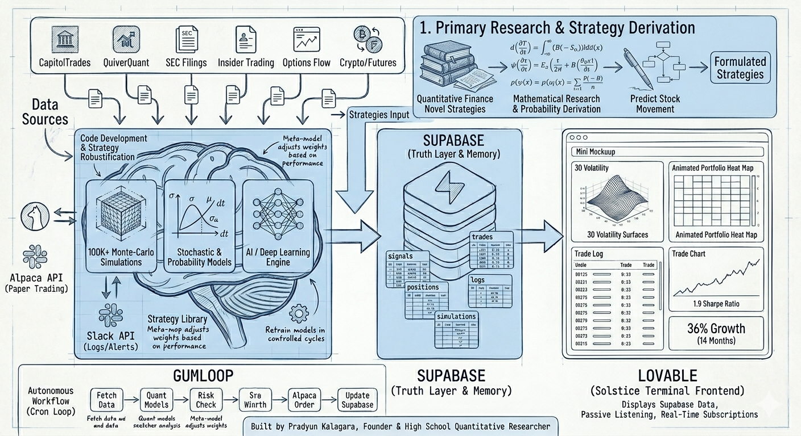

An autonomous institutional-grade quantitative research desk built on a deterministic strategy stack, vectorized 100K-path Monte-Carlo simulation, ATR-scaled risk engine, and live Alpaca paper execution. Continuous cross-sectional alpha discovery across 794 assets · stocks, ETFs, futures, crypto.
INITIATE TERMINAL ACCESS
Continuous OHLCV ingest across stocks, ETFs, crypto, futures. Liquidity-ranked top 300 by 5-day dollar volume. Alpaca account state mirrored every cycle.
Deterministic strategy stack — momentum, mean reversion, vol breakout, trend, RS, flow, regime-sensitive. Meta-model with weekly inverse-vol rebalancing. No mid-run self-modification.
ATR volatility sizing · $100k portfolio heat cap · $5M ADV floor · 30-min cooldown · market-hours gated paper execution via Alpaca REST.